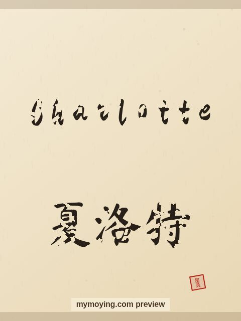

Charlotte in Chinese Calligraphy
Curious how Charlotte looks in Chinese brush calligraphy? This page shows the name, its Chinese transliteration 夏洛特 (Xià luò tè), and the story behind it.

Sample. “Charlotte” in the Regular (楷书) brush style with the Chinese name 夏洛特 (Xià luò tè). The paid file removes the watermark.
The Chinese characters for Charlotte
As a transliteration, Charlotte is usually written 夏洛特 (Xià luò tè). Each character is listed below with its own dictionary meaning — the name is chosen by sound, not by meaning, and Moying does not translate names. Please have a person review the characters before any permanent use such as a tattoo.
Origin and meaning
With French origins, Charlotte is usually read as “free man (feminine of Charles)”.
About the name Charlotte
The name of Queen Charlotte of England and of the writer Charlotte Brontë.
As a gift or a tattoo
Because it means “free man (feminine of Charles)”, a Charlotte calligraphy print makes a thoughtful gift for someone who loves the name or its meaning.
Open Charlotte in the generatorFree watermarked preview. $1.99 once for a clean high-resolution download of this name in every style and setting. No subscription. Digital product, delivered instantly; see Terms.